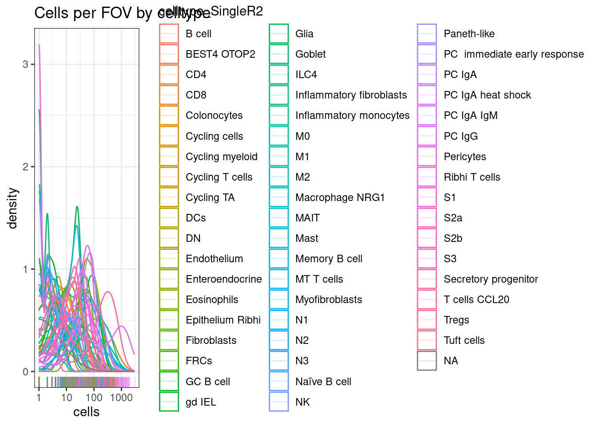

Differential celltype composition between groups
Sarah Williams
Last updated: 2024-04-10
Checks: 7 0
Knit directory: spatialsnippets/
This reproducible R Markdown analysis was created with workflowr (version 1.7.1). The Checks tab describes the reproducibility checks that were applied when the results were created. The Past versions tab lists the development history.
Great! Since the R Markdown file has been committed to the Git repository, you know the exact version of the code that produced these results.
Great job! The global environment was empty. Objects defined in the global environment can affect the analysis in your R Markdown file in unknown ways. For reproduciblity it’s best to always run the code in an empty environment.
The command set.seed(20231017) was run prior to running
the code in the R Markdown file. Setting a seed ensures that any results
that rely on randomness, e.g. subsampling or permutations, are
reproducible.
Great job! Recording the operating system, R version, and package versions is critical for reproducibility.
Nice! There were no cached chunks for this analysis, so you can be confident that you successfully produced the results during this run.
Great job! Using relative paths to the files within your workflowr project makes it easier to run your code on other machines.
Great! You are using Git for version control. Tracking code development and connecting the code version to the results is critical for reproducibility.
The results in this page were generated with repository version 8ef9cd9. See the Past versions tab to see a history of the changes made to the R Markdown and HTML files.
Note that you need to be careful to ensure that all relevant files for
the analysis have been committed to Git prior to generating the results
(you can use wflow_publish or
wflow_git_commit). workflowr only checks the R Markdown
file, but you know if there are other scripts or data files that it
depends on. Below is the status of the Git repository when the results
were generated:
Ignored files:
Ignored: .Rproj.user/
Ignored: renv/library/
Ignored: renv/staging/
Unstaged changes:
Modified: renv.lock
Modified: renv/activate.R
Note that any generated files, e.g. HTML, png, CSS, etc., are not included in this status report because it is ok for generated content to have uncommitted changes.
These are the previous versions of the repository in which changes were
made to the R Markdown (analysis/e_CompositionChange.Rmd)
and HTML (docs/e_CompositionChange.html) files. If you’ve
configured a remote Git repository (see ?wflow_git_remote),
click on the hyperlinks in the table below to view the files as they
were in that past version.
| File | Version | Author | Date | Message |
|---|---|---|---|---|
| Rmd | 8ef9cd9 | swbioinf | 2024-04-10 | wflow_publish("analysis/") |
| html | 30da140 | Sarah Williams | 2024-03-22 | Build site. |
| Rmd | 89c3371 | Sarah Williams | 2024-03-22 | wflow_publish(c("analysis/index_data.Rmd", "analysis/index.Rmd", |
Is there a difference in the celltype composition between individuals with Ulcerative colitis or Crohn’s disease, and Healthy controls?
Load libraries and data object
library(Seurat)Loading required package: SeuratObjectLoading required package: sp'SeuratObject' was built under R 4.3.0 but the current version is
4.3.2; it is recomended that you reinstall 'SeuratObject' as the ABI
for R may have changed
Attaching package: 'SeuratObject'The following object is masked from 'package:base':
intersectlibrary(speckle)Warning: replacing previous import 'S4Arrays::makeNindexFromArrayViewport' by
'DelayedArray::makeNindexFromArrayViewport' when loading 'SummarizedExperiment'library(tidyverse)── Attaching core tidyverse packages ──────────────────────── tidyverse 2.0.0 ──
✔ dplyr 1.1.4 ✔ readr 2.1.5
✔ forcats 1.0.0 ✔ stringr 1.5.1
✔ ggplot2 3.5.0 ✔ tibble 3.2.1
✔ lubridate 1.9.3 ✔ tidyr 1.3.1
✔ purrr 1.0.2 ── Conflicts ────────────────────────────────────────── tidyverse_conflicts() ──
✖ dplyr::filter() masks stats::filter()
✖ dplyr::lag() masks stats::lag()
ℹ Use the conflicted package (<http://conflicted.r-lib.org/>) to force all conflicts to become errorsdata_dir <- file.path("~/projects/spatialsnippets/datasets/GSE234713_IBDcosmx_GarridoTrigo2023/processed_data")
seurat_file_01_loaded <- file.path(data_dir, "GSE234713_CosMx_IBD_seurat_01_loaded.RDS")so <- readRDS(seurat_file_01_loaded)
# MIGRATE TO DATA PREP >>>>
so$individual_code <- factor(substr(so$orig.ident,12,16))
so$tissue_sample <- factor(substr(so$orig.ident,12,16))
so$fov_name <- paste0(so$individual_code,"_", str_pad(so$fov, 3, 'left',pad='0'))
so$celltype_subset <- factor(so$celltype_subset)
# <<<<Looking at the data
There are three indivduals per contidion (one tissue sample from each individual). With multiple fovs on each physical tissue sample.
select(as_tibble(so@meta.data), condition, individual_code, fov_name) %>%
unique() %>%
group_by(condition, individual_code) %>%
summarise(n_fovs= n(), item = str_c(fov_name, collapse = ", "))`summarise()` has grouped output by 'condition'. You can override using the
`.groups` argument.# A tibble: 9 × 4
# Groups: condition [3]
condition individual_code n_fovs item
<chr> <fct> <int> <chr>
1 Chrones's disease CD_a 19 CD_a_001, CD_a_002, CD_a_003, CD_a_…
2 Chrones's disease CD_b 19 CD_b_002, CD_b_003, CD_b_004, CD_b_…
3 Chrones's disease CD_c 16 CD_c_001, CD_c_002, CD_c_003, CD_c_…
4 Healthy controls HC_a 19 HC_a_001, HC_a_002, HC_a_003, HC_a_…
5 Healthy controls HC_b 20 HC_b_001, HC_b_002, HC_b_003, HC_b_…
6 Healthy controls HC_c 16 HC_c_001, HC_c_002, HC_c_003, HC_c_…
7 Ulcerative colitis UC_a 19 UC_a_001, UC_a_002, UC_a_005, UC_a_…
8 Ulcerative colitis UC_b 22 UC_b_001, UC_b_002, UC_b_003, UC_b_…
9 Ulcerative colitis UC_c 21 UC_c_001, UC_c_002, UC_c_003, UC_c_…Full worked example
Count how many cells of each type in your data
celltype_summary_table <- so@meta.data %>%
group_by(condition, individual_code, fov_name, celltype_subset) %>%
summarise(cells=n(), .groups = 'drop')check for very low count groups
Here T cells are rare, but there are still a decent distribution of them with 10-100+ cells in a FOV.
If many of your celltypes, consider merging similar cell types (e.g. T cells rather than T cell subtypes)
ggplot(celltype_summary_table, aes(x=cells, col=celltype_subset)) +
geom_density() +
geom_rug(alpha=0.2) +
scale_x_log10() +
theme_bw() +
ggtitle("Cells per FOV by celltype")
| Version | Author | Date |
|---|---|---|
| 30da140 | Sarah Williams | 2024-03-22 |
If you have alot of cell types, sometimes there can be very rare types that would be hard to detect differences in.
This can expecially happen if you’re using celltype assignment with a detailed reference. You might get a handful of irrelevant cell types called (e.g. 4 hepatocytes on a non-liver sample). No reasonable stats could be generated there, and leaving them in would mean a more extreme FDR adjustment.
celltype_summary_table.SingleR <- so@meta.data %>%
group_by(condition, individual_code, fov_name, celltype_SingleR2) %>%
summarise(cells=n(), .groups = 'drop')
ggplot(celltype_summary_table.SingleR, aes(x=cells, col=celltype_SingleR2)) +
geom_density() +
geom_rug(alpha=0.2) +
scale_x_log10() +
theme_bw() +
ggtitle("Cells per FOV by celltype")
| Version | Author | Date |
|---|---|---|
| 30da140 | Sarah Williams | 2024-03-22 |
Look at your samples.
ggplot(celltype_summary_table, aes(x=fov_name, y=cells, fill=celltype_subset)) +
geom_bar(position="fill", stat="identity") +
theme_bw() +
coord_flip() +
theme(legend.position = "bottom") +
facet_wrap(~condition, ncol=3, scales = 'free_y') +
scale_y_continuous(expand = c(0,0)) 
| Version | Author | Date |
|---|---|---|
| 30da140 | Sarah Williams | 2024-03-22 |
Calculate stats.
results.anova <- propeller(clusters= so$celltype_subset,
sample = so$individual_code,
group = so$condition)Performing logit transformation of proportionsgroup variable has > 2 levels, ANOVA will be performedresults.anova BaselineProp PropMean.Chrones.s.disease PropMean.Healthy.controls
epi 0.2336112 0.25884773 0.40528423
myeloids 0.1242437 0.12933965 0.06414522
stroma 0.2397435 0.21120914 0.24761081
plasmas 0.3692386 0.36680895 0.25076104
tcells 0.0331629 0.03379454 0.03219870
PropMean.Ulcerative.colitis Fstatistic P.Value FDR
epi 0.21803174 1.2861724 0.3216825 0.7534123
myeloids 0.10678699 0.4468305 0.6528237 0.7534123
stroma 0.27412907 0.4228438 0.6672889 0.7534123
plasmas 0.38515297 0.3440366 0.7176420 0.7534123
tcells 0.01589923 0.2920340 0.7534123 0.7534123# If a column is preferred over rownames
results.anova.table <- rownames_to_column( results.anova, var="celltype_subset")so.UCvsHC <- so[,so$condition %in% c("Healthy controls", "Ulcerative colitis")]
results.pair <- propeller( clusters= so.UCvsHC$celltype_subset,
sample = so.UCvsHC$individual_code,
group = so.UCvsHC$condition)Performing logit transformation of proportionsgroup variable has 2 levels, t-tests will be performedCode snippet
library(speckle)
# seurat object so
results_table <- propeller(clusters = so$cluster,
sample = so$sample,
group = so$condition)Results
Paired
results.pair BaselineProp.clusters BaselineProp.Freq PropMean.Healthy.controls
epi epi 0.27031229 0.40528423
plasmas plasmas 0.35035166 0.25076104
myeloids myeloids 0.09419929 0.06414522
tcells tcells 0.02610896 0.03219870
stroma stroma 0.25902780 0.24761081
PropMean.Ulcerative.colitis PropRatio Tstatistic P.Value FDR
epi 0.21803174 1.8588314 1.9199430 0.06304484 0.3152242
plasmas 0.38515297 0.6510687 -0.5012020 0.61936683 0.8296216
myeloids 0.10678699 0.6006839 -0.4878233 0.62871700 0.8296216
tcells 0.01589923 2.0251739 0.4385299 0.66369729 0.8296216
stroma 0.27412907 0.9032636 -0.1354523 0.89303030 0.8930303- rownames : The tested cell types
- BaselineProp : The overall proportion of the cell type across the dataset. (Overall, not a average of PropMean per group).
- PropMean.X : The proportion of cell type in each group. Here that’s PropMean.Healthy.controls, PropMean.Ulcerative.colitis)
- PropRatio : Ratio of proprotions of first to second group.
- Tstatistic : The T statistic.
- P.Value : P.value
- FDR : A multiple-hypothesis corrected p-value
Anova
results.anova BaselineProp PropMean.Chrones.s.disease PropMean.Healthy.controls
epi 0.2336112 0.25884773 0.40528423
myeloids 0.1242437 0.12933965 0.06414522
stroma 0.2397435 0.21120914 0.24761081
plasmas 0.3692386 0.36680895 0.25076104
tcells 0.0331629 0.03379454 0.03219870
PropMean.Ulcerative.colitis Fstatistic P.Value FDR
epi 0.21803174 1.2861724 0.3216825 0.7534123
myeloids 0.10678699 0.4468305 0.6528237 0.7534123
stroma 0.27412907 0.4228438 0.6672889 0.7534123
plasmas 0.38515297 0.3440366 0.7176420 0.7534123
tcells 0.01589923 0.2920340 0.7534123 0.7534123- rownames : The tested cell types
- BaselineProp : The overall proportion of the cell type across the dataset. (Overall, not a average of PropMean per group).
- PropMean.X : The proportion of cell type in each group. Here that’s PropMean.Chrones.s.disease, PropMean.Healthy.controls, PropMean.Ulcerative.colitis)
- Fstatistic : The Fstatistic calculated.
- P.Value : P.value
- FDR : A multiple-hypothesis corrected p-value
More information
- Speckle Vignette (https://www.bioconductor.org/packages/release/bioc/vignettes/speckle/inst/doc/speckle.html) : Comphrehensive details of how to use different tests for speckle.
- Propeller paper: (https://academic.oup.com/bioinformatics/article/38/20/4720/6675456)
sessionInfo()R version 4.3.2 (2023-10-31)
Platform: x86_64-pc-linux-gnu (64-bit)
Running under: Ubuntu 22.04.4 LTS
Matrix products: default
BLAS: /usr/lib/x86_64-linux-gnu/openblas-pthread/libblas.so.3
LAPACK: /usr/lib/x86_64-linux-gnu/openblas-pthread/libopenblasp-r0.3.20.so; LAPACK version 3.10.0
locale:
[1] LC_CTYPE=en_AU.UTF-8 LC_NUMERIC=C
[3] LC_TIME=en_AU.UTF-8 LC_COLLATE=en_AU.UTF-8
[5] LC_MONETARY=en_AU.UTF-8 LC_MESSAGES=en_AU.UTF-8
[7] LC_PAPER=en_AU.UTF-8 LC_NAME=C
[9] LC_ADDRESS=C LC_TELEPHONE=C
[11] LC_MEASUREMENT=en_AU.UTF-8 LC_IDENTIFICATION=C
time zone: Etc/UTC
tzcode source: system (glibc)
attached base packages:
[1] stats graphics grDevices datasets utils methods base
other attached packages:
[1] lubridate_1.9.3 forcats_1.0.0 stringr_1.5.1 dplyr_1.1.4
[5] purrr_1.0.2 readr_2.1.5 tidyr_1.3.1 tibble_3.2.1
[9] ggplot2_3.5.0 tidyverse_2.0.0 speckle_1.2.0 Seurat_5.0.3
[13] SeuratObject_5.0.1 sp_2.1-3 workflowr_1.7.1
loaded via a namespace (and not attached):
[1] RcppAnnoy_0.0.22 splines_4.3.2
[3] later_1.3.2 bitops_1.0-7
[5] polyclip_1.10-6 fastDummies_1.7.3
[7] lifecycle_1.0.4 edgeR_4.0.16
[9] rprojroot_2.0.4 globals_0.16.3
[11] processx_3.8.4 lattice_0.22-6
[13] MASS_7.3-60.0.1 magrittr_2.0.3
[15] limma_3.58.1 plotly_4.10.4
[17] sass_0.4.9 rmarkdown_2.26
[19] jquerylib_0.1.4 yaml_2.3.8
[21] httpuv_1.6.15 sctransform_0.4.1
[23] spam_2.10-0 spatstat.sparse_3.0-3
[25] reticulate_1.35.0 cowplot_1.1.3
[27] pbapply_1.7-2 RColorBrewer_1.1-3
[29] abind_1.4-5 zlibbioc_1.48.2
[31] Rtsne_0.17 GenomicRanges_1.54.1
[33] BiocGenerics_0.48.1 RCurl_1.98-1.14
[35] git2r_0.33.0 GenomeInfoDbData_1.2.11
[37] IRanges_2.36.0 S4Vectors_0.40.2
[39] ggrepel_0.9.5 irlba_2.3.5.1
[41] listenv_0.9.1 spatstat.utils_3.0-4
[43] goftest_1.2-3 RSpectra_0.16-1
[45] spatstat.random_3.2-3 fitdistrplus_1.1-11
[47] parallelly_1.37.1 leiden_0.4.3.1
[49] codetools_0.2-20 DelayedArray_0.28.0
[51] tidyselect_1.2.1 farver_2.1.1
[53] matrixStats_1.2.0 stats4_4.3.2
[55] spatstat.explore_3.2-7 jsonlite_1.8.8
[57] progressr_0.14.0 ggridges_0.5.6
[59] survival_3.5-8 tools_4.3.2
[61] ica_1.0-3 Rcpp_1.0.12
[63] glue_1.7.0 gridExtra_2.3
[65] SparseArray_1.2.4 xfun_0.43
[67] MatrixGenerics_1.14.0 GenomeInfoDb_1.38.8
[69] withr_3.0.0 BiocManager_1.30.22
[71] fastmap_1.1.1 fansi_1.0.6
[73] callr_3.7.6 digest_0.6.35
[75] timechange_0.3.0 R6_2.5.1
[77] mime_0.12 colorspace_2.1-0
[79] scattermore_1.2 tensor_1.5
[81] spatstat.data_3.0-4 utf8_1.2.4
[83] generics_0.1.3 renv_1.0.5
[85] data.table_1.15.4 httr_1.4.7
[87] htmlwidgets_1.6.4 S4Arrays_1.2.1
[89] whisker_0.4.1 uwot_0.1.16
[91] pkgconfig_2.0.3 gtable_0.3.4
[93] lmtest_0.9-40 SingleCellExperiment_1.24.0
[95] XVector_0.42.0 htmltools_0.5.8
[97] dotCall64_1.1-1 scales_1.3.0
[99] Biobase_2.62.0 png_0.1-8
[101] knitr_1.45 rstudioapi_0.16.0
[103] tzdb_0.4.0 reshape2_1.4.4
[105] nlme_3.1-164 cachem_1.0.8
[107] zoo_1.8-12 KernSmooth_2.23-22
[109] parallel_4.3.2 miniUI_0.1.1.1
[111] pillar_1.9.0 grid_4.3.2
[113] vctrs_0.6.5 RANN_2.6.1
[115] promises_1.2.1 xtable_1.8-4
[117] cluster_2.1.6 evaluate_0.23
[119] cli_3.6.2 locfit_1.5-9.9
[121] compiler_4.3.2 rlang_1.1.3
[123] crayon_1.5.2 future.apply_1.11.2
[125] labeling_0.4.3 ps_1.7.6
[127] getPass_0.2-4 plyr_1.8.9
[129] fs_1.6.3 stringi_1.8.3
[131] viridisLite_0.4.2 deldir_2.0-4
[133] munsell_0.5.1 lazyeval_0.2.2
[135] spatstat.geom_3.2-9 Matrix_1.6-5
[137] RcppHNSW_0.6.0 hms_1.1.3
[139] patchwork_1.2.0 future_1.33.2
[141] statmod_1.5.0 shiny_1.8.1.1
[143] highr_0.10 SummarizedExperiment_1.32.0
[145] ROCR_1.0-11 igraph_2.0.3
[147] bslib_0.7.0